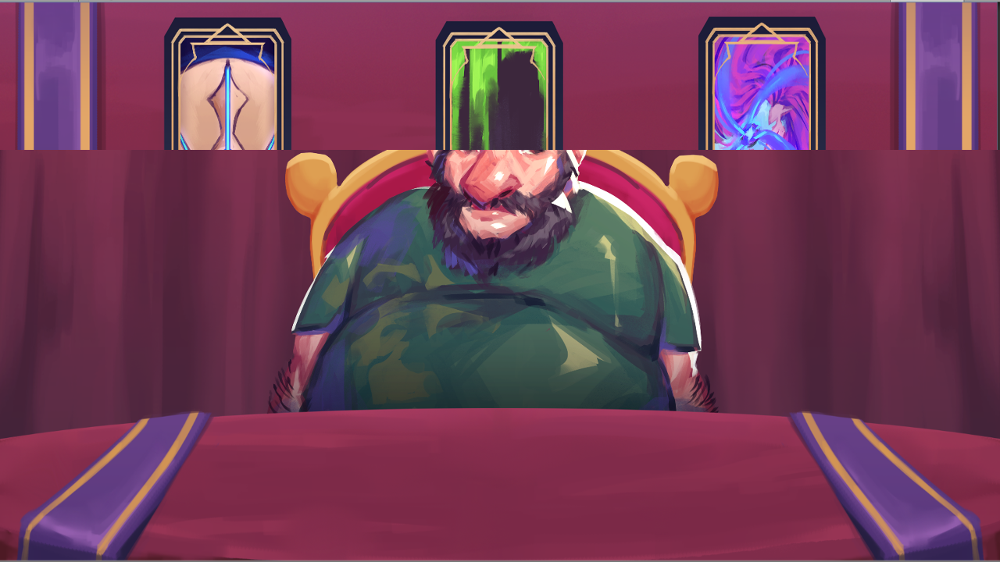
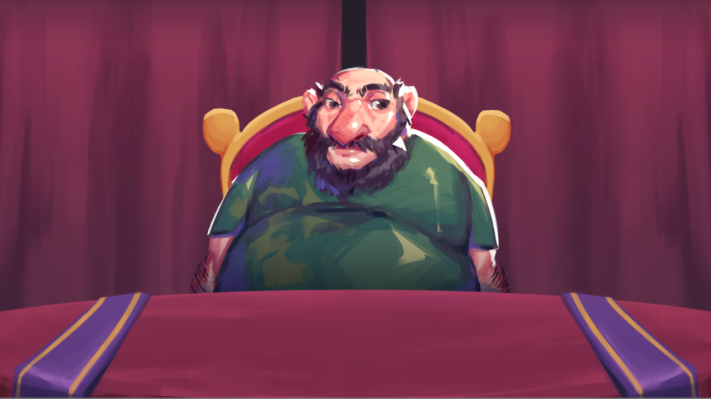
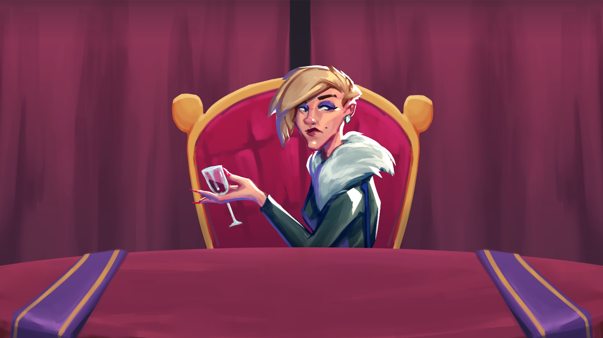

Card Crossed Lovers
A phony tarot reader has more power over a troubled marriage than they realize.

About the Game
Card Crossed Lovers is a visual novel with puzzle elements and multiple endings. Players take control of a tarot reader who doesn't believe in the power of tarot, but still wants to make a quick buck off of gullible patrons. After encountering a husband and wife with a troubled marriage, you realize that your tarot readings have more power than you initially believed. Players are given a three-card "Past, Present, Future" spread, and the order in which you place each character's cards determines the endings for that character.

The Process
Card Crossed Lovers was developed as part of a week-long game jam coordinated by the Northeastern University and Emerson College game development clubs. The game's premise came from an idea that two of our team members had wanted to develop for a long time. In our initial planning phase, we determined what our core gameplay, story, and characters would be. Over the next week, our artist and composer created assets for us, and our writer used the Ink plugin to create the game's script. We then put all the assets together in Unity and programmed the card selection scenes. We plan to add several more scenes to the game in the near future. Meanwhile, our animator created some top-notch models and animations for our weapons and powerups.

My Contributions
My main role was programming the interactive Tarot element of our game. I made sure the cards worked properly with our canvas, then set to work developing a drag and drop script. Once the cards could be moved, I wrote functions that ensured the cards behaved properly when releasing the mouse. If you drop a card on another card, they switch positions in a snappy fashion. If the card is not touching another card when you release the mouse, it snaps back to its initial position. I also did a lot of proofreading and editing for our script.
Powered by w3.css